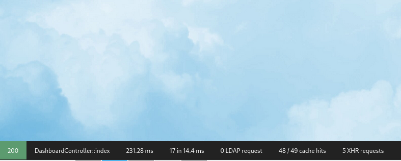
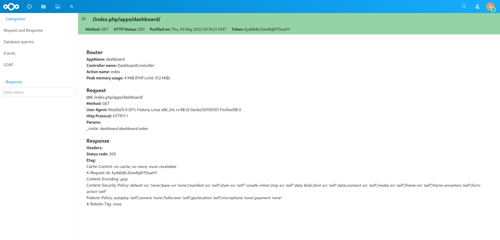
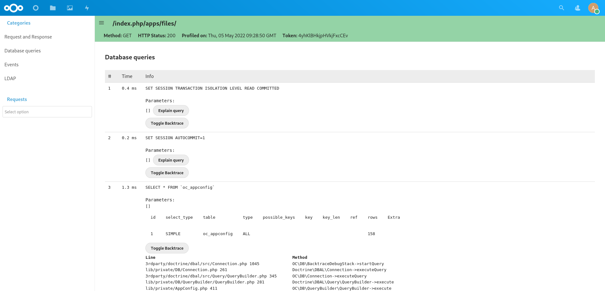
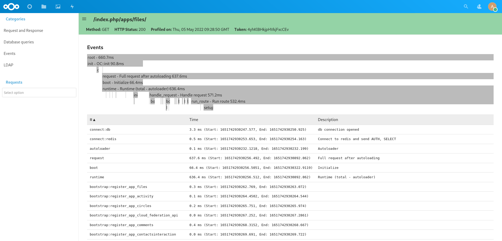
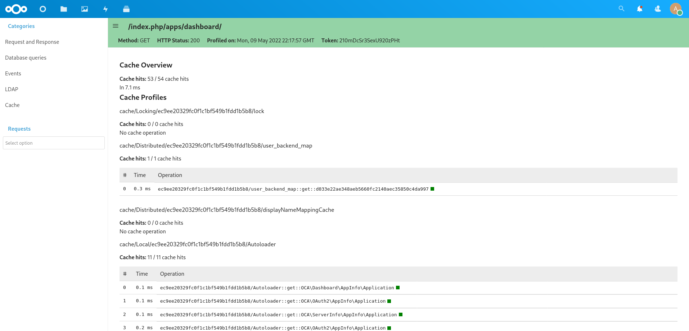

Profiler
Nextcloud offers a built-in profiler that can help you identifying performance issues with your Nextcloud application. This feature is available starting from Nextcloud 24.
Get the app
The profiler application is available on GitHub you need to clone the stableX branch if you are using Nextcloud X or master if you are using the latest development version of Nextcloud.
Enable the app
Warning
Do not run this application on production. This will slow down considerably your server as collection profiling information consume a lot of CPU and memory.
To enable the app, you can run the following commands:
npm ci && npm run build
occ app:enable profiler
occ profiler:enable # This will also enable the debug mode if not already enabled
Disable the app
occ profiler:disable
occ config:system:set debug --value false --type bool # to also disable the debug mode
Using the app
When enabled, the profiler application will inject a toolbar at the bottom of the screen. This toolbar provides you information about the current HTTP request, the time it took to run, how many database and LDAP requests it did, how often did the cache hit and also the toolbar track the XHR requests created by the JavaScript frontend.
You can hover on top of the toolbar information to show more detailed information and also click on the toolbar to show all the information collected.
There is for the moment 5 views:
The general request and response view
The database queries view
The event view
The LDAP queries view
The cache view
The General Request and Response View
This view gives you general information about the request. For example, which Controller and method was used, what where the response headers, the request parameters, …
The Database Queries View
This view gives you a list of all the database queries done for your request and how much time it took for the database to execute. Additionally you can also explain the query to see if an index was used and also see the backtrace to better understand why the query was executed.
It’s important to keep the number of queries executed to a minimum since the database is often a limiting factor in a Nextcloud installation. In particular try to avoid the N+1 problem as this can be really slow on big Nextcloud instance and make sure that your queries are using Database indexes when possible.
The LDAP View
This view is very similar to the database queries view and display all the database queries.
The Event View
This view display all the logged events and allow you to determine in which part of the programe the more time is spent.
The Cache View
This view display all the access to the cache. It allows to detect cache hits and miss as well as getting an idea of the time spent on Redis.
Contributing
Contribution to improve the profiler are always welcome. Some future work could include a way to display Redis queries and not only give a statistic of them. And more type of data could be collected, e.g. HTTP requests to external APIs, IMAP call for the mail app, usage of the mailer service, …
To extend the profiler app, you will need to provide your own DataCollector.
<?php
declare(strict_types=1);
namespace OCA\MyApp\DataCollector;
use OC\AppFramework\Http\Request;
use OCP\AppFramework\Http\Response;
use OCP\DataCollector\AbstractDataCollector;
class MyAppDataCollector extends AbstractDataCollector {
public function getName(): string {
return 'myappcollector'; // default to the class' name
}
public function collect(Request $request, Response $response, \Throwable $exception = null): void {
$this->data = [
'mydata' => 42
];
}
}
You also need to register the DataCollector in your app boot method:
<?php
declare(strict_types=1);
class Application extends App implements IBootstrap {
public function boot(IBootContext $context): void {
$server = $context->getServerContainer();
/** @var IProfiler $profiler */
$profiler = $server->get(IProfiler::class);
$profiler->add(new MyAppDataCollector());
You can find some examples in the profiler app git repo.